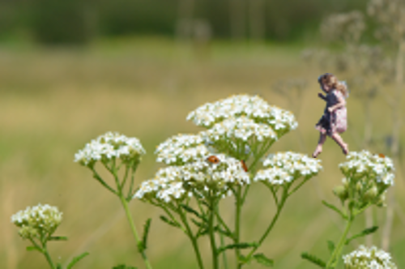

Dangers
-
Natural
-
Environmental
The only true natural danger to the Fling Tree Stingray
is the tree nimp. The tree nimp is only a tenth of the size of the
flying tree stingray, but has a song which when sung within five
linear foot of the female flying tree stingray's tail, she looses
one of her two stingers.

The loss of her second stinger makes her unnoticable from then on to
the male flying tree stingray. Granted there are no actual biological
changes, yet they will never mate again. The only tangable reasoning
would be that the female has become so ugle that the male now considers
them as they would another male!